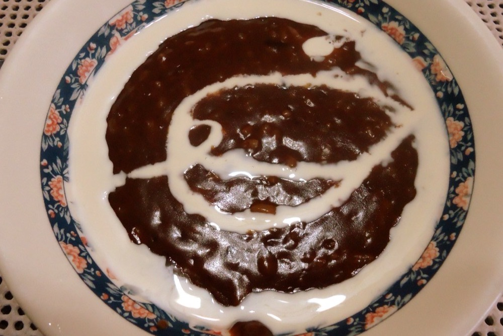

Champorado (Filipino Chocolate Rice Porridge)
Warm chocolate rice porridge — a rainy-morning childhood favorite

Champorado is chocolate rice porridge — sticky glutinous rice cooked with tablea (Filipino chocolate discs) into a warm, thick, cocoa-rich breakfast. It is comfort food for cold mornings, traditionally drizzled with evaporated milk and, surprisingly and wonderfully, eaten with salty dried fish (tuyo) on the side.
Ingredients
- 1 cup glutinous rice (malagkit)
- 4 cups water
- 4 tablea discs (or 1/4 cup unsweetened cocoa powder)
- 1/2 cup sugar, to taste
- Pinch of salt
- Evaporated milk, to serve
Instructions
- Rinse the glutinous rice, then bring the water to a boil in a pot.
- Add the rice and cook over medium heat, stirring often to prevent sticking, until the grains are soft and the mixture thickens, about 20 minutes.
- Dissolve the tablea (or cocoa) in a little hot water, then stir it into the rice until evenly chocolatey.
- Add the sugar and a pinch of salt. Cook, stirring, until thick and glossy. Add a splash more water if it gets too stiff.
- Ladle into bowls and serve hot, drizzled with evaporated milk. For the classic pairing, serve with fried tuyo (dried fish) on the side.
Cook's tip: Champorado thickens as it cools, so keep it looser than you think in the pot. Leftovers reheat well with a splash of water or milk stirred in.
Curious which Filipino dish matches your personality? Take the Pinoy Food Personality Test or browse the full Filipino Food Guide.